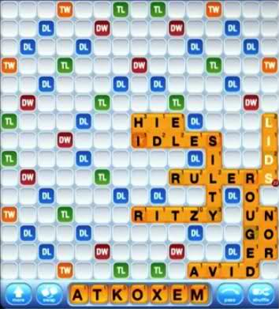
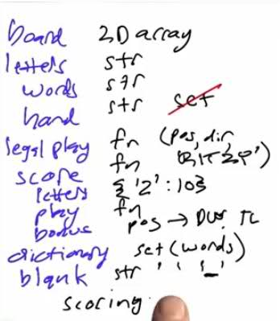

Back to course page | CS212 Unit 1 | CS212 Unit 2 | CS212 Unit 3 | CS212 Unit 4 | CS212 Unit 5 | CS212 Unit 6 Code| Print this page | Save as PDF
CS212 Unit 6
Contents
- 01 Welcome Back
- 02 Word Games
- 03 Concept Inventory
- 04 Finding Words
- 05 Regression Tests
- 06 Readwordlist
- 06 Readwordlist (answer)
- 07 Extend Prefix
- 07 Extend Prefix (answer)
- 08 Add Suffixes
- 08 Add Suffixes (answer)
- 09 Longest Words
- 09 Longest Words (answer)
- 10 Word Score
- 10 Word Score (answer)
- 11 Top N Hands
- 11 Top N Hands (answer)
- 12 Cross Words
- 13 Anchors
- 13 Anchors (answer)
- 14 Bird By Bird
- 15 Anchor Class
- 16 Row Plays
- 17 Legal Prefixes
- 17 Legal Prefixes (answer)
- 18 Life is Good
- 19 Increasing Efficiency
- 19 Increasing Efficiency (answer)
- 20 Show and Spell
- 20 Show and Spell (answer)
- 21 Horizontal Plays
- 21 Horizontal Plays (answer)
- 22 All Plays
- 22 All Plays (answer)
- 23 Set Anchors
- 24 Final Birds
- 25 Scoring
- 26 Scoring 2
- 27 Making the Board
- 27 Making the Board (answer)
- 28 Making Plays
- 28 Making Plays (answer)
- 29 Best Play
- 29 Best Play (answer)
1. 01 Welcome Back
2. 02 Word Games
We've got a lot to cover and not much time to do it so let's dig right in. Here's a game I'm playing online with my friend, Ken.

I'm winning by a little bit mostly because I got good letters like the Z and so on but Ken is catching up.
Let's dig right in and come up with our concept inventory. What have we got?
- Well, the most obvious thing, there's a board.
- there's letters--both letters on the board and letters in the hand, and the letters on the board have to form words and in the hand they're not.
- There's the notion of a legal play on the board, so RITZY is a word, and it's a word independent of where it appears, but it's legal to have placed it here where it hooks up with another letter, and it wouldn't have been legal to place it where it bumps into the H or where it's not attached to anything else.
- There's the notion of score and the score for individual letters. Z is worth 10. An I is worth 1.
- And there are scores for a play where you add up the letters. Part of that is that there are bonuses on the board. DL means double letter score. A letter that's placed there gets doubled. DW means double word score. If any letter of the word is on that square, then the whole word score is doubled, and we also have triples as well.
- Somewhere behind the scenes, there's a dictionary and all these words are in the dictionary and other combinations of letters are not.
- Then not shown here is the notion of a blank tile. Part of the hand might be a blank that isn't indicating any particular letter, but you're free to use for any one, similar to the way we had jokers in the game of poker.
3. 03 Concept Inventory
Now let's talk about how to implement any of these, see if there's any difficulties, any areas that we think might be hard to implement.
The board can be some kind of two-dimensional array, maybe a list of lists is one possibility. One thing I'm not quite clear on now is do I need one board or two? It's clear I need one board to hold all the letters, but then there's also the bonus squares. Should that be part of the same board or should that be a separate board and the letters are layered on top of this background of bonus squares? I'm not quite sure yet, but I'm not too worried about it, because I can make either approach work.
A letter can be one character string.
A word can be a string.
A hand can also be a string. It could also be a list of letters. Either one would be fine. Any collection of letters would be okay. Note that a set would not work for the hand. The hand can't be a set of letters, because we might have duplicates, and sets don't allow duplicates.
Now, for the notion of a legal play, we'll have some function that generates legal plays, given a board position and a hand, and then the plays themselves will need some representation. Maybe they can be something like a tuple of say starting position-- for example, "RITZY" starts in this location, the direction in which they're going-- are they going across or down, the two allow about directions--and the word itself. In this case, RITZY. That seems like a good representation for a legal play.
I'm not quite sure yet what the representation of a position or a direction should be, but that's easy enough.
A score--we'll have some function to compute the score.
For letters, we can have a dictionary that says the value of Z is 10.
For plays we'll need some function to compute that.
For the bonus squares, we'll need some mapping from a position on the board to double word or triple letter or whatever.
A dictionary is a set of words.
The blank letter--well, we said letters were strings, so that's probably okay. We could use the string space or the string underscore, to represent the blank. Then it's dealing with it that will be an issue later on. Now, I'm a little bit worried about blanks, because in poker Jokers were easy. We just said, replace them by any card and just deal with all the possibilities. Our routines are fast enough that we could probably deal with them all. Here I'm pretty confident we can make it fast enough that that approach will work, but it doesn't quite work because not only do we have to try all possibilities for the letter, but the scoring rules are actually different. When you use a blank instead of a letter, you don't get the letter scores for that blank. We'll have to have scoring know about blanks and not just know about filling things in. That'll be a complication. But overall I went through all the concepts. I've got an implementation for both.

Some of them are functions that I don't quite know how to do, but I don't see anything that looks like a show stopper. I think I can go ahead. The difficulty then is not that I have to invent something new in order to solve one of the problems.
The difficulty is just that there's so much.
When faced with a problem of this size or problems can be much larger, the notion of pacing is an important one.
What do I mean by that? It means I want to attack this, and I know I'm not going to solve it all at once. I'm not just going to sit down for 20 minutes and knock out the whole problem. It's going to be a lot longer than that.
I want to have pacing in that I have intermediate goals along the way where I can say, okay, now I'm going focus on one part of the problem, and I'm going to get that done. Then when I'm done with that part, then I can move on to the next part.
If you don't have that pacing, you can lose your focus. You can get discouraged that there's so much left to do. But if you break it up into bite-sized pieces, then you can say, okay, I'm almost there. I just have to finish a little bit more, and now this piece will be done, and then I can move on to the next piece.
The first piece I'm going to look at is finding words from a hand. In other words, I'm going ignore the whole board. I'm going to say pretend the board isn't there and pretend all we have is the hand, and we have the dictionary, a set of legal words. I want to know out of that hand, what words in the dictionary can I make?
4. 04 Finding Words
Let's get started. The first thing I need is to come up with a dictionary of all the words.
Now, we've created a small file with about 4,000 words in it, called "word4k.txt."
Let's take that file, read it, convert it to uppercase, because Scrabble with Words with Friends use only uppercase letters, split it into a list of words, assign that to a global variable-- we'll call it WORDS and put it in all uppercase, just make sure that it stands out. Let's make this a set so that access to it is easy. We can figure out very quickly whether a word is in the dictionary. Okay, so now we're done.
1 WORDS = set(file('words4k.txt').read().upper().split())
We have our words. Then I want to find all the words within a hand. So the hand will be seven letters, and I want to find all the words of seven letters or less that can be made out of those letters. I'm going start with a very straightforward approach, and then we're going to refine it over time. Here is what I've done:
1 def find_words(hand):
2 "Find all words that can be made from the letters in hand."
3 results = set()
4 for a in hand:
5 if a in WORDS: results.add(a)
6 for b in removed(hand, a):
7 w = a+b
8 if w in WORDS: results.add(w)
9 for c in removed(hand, w):
10 w = a+b+c
11 if w in WORDS: results.add(w)
12 for d in removed(hand, w):
13 w = a+b+c+d
14 if w in WORDS: results.add(w)
15 for e in removed(hand, w):
16 w = a+b+c+d+e
17 if w in WORDS: results.add(w)
18 for f in removed(hand, w):
19 w = a+b+c+d+e+f
20 if w in WORDS: results.add(w)
21 for g in removed(hand, w):
22 w = a+b+c+d+e+f+g
23 if w in WORDS: results.add(w)
24
25 return results
I haven't worried about repeating myself and about making the code long. I just wanted to make it straightforward. Then I said, the first letter a can be any letter in the hand. If that's a word, then go ahead and add that to my set of results. I start off with an empty set of results, and I'm going to add as I go. Otherwise, b can be any letter in the result of removing a from the hand. Now the word that I'm building up is a + b--two-letter word. If that's a word, add it. Otherwise, c can be any letter in the hand without w in it-- the remaining letters in the hand. A new word can is a + b + c. If that's in WORDS, then add it, and we just keep on going through, adding a letter each time, checking to see if that's in the WORDS, adding them up.
Here's my definition of removed:
It takes a hand or a sequence of letters and then the letter or letters to remove. For each of those letters just replace the letter in the collection of letters with the empty string and do that exactly once, so don't remove all of them. Then return the remaining letters.
Does it work? Well, if I find words with this sequence of letters in my hand, it comes back with this list.
1 >>> find_words('LETTERS')
2 set(['ERS', 'RES', 'RET', 'ERE', 'STREET', 'ELS', 'REE', 'SET', 'LETTERS', 'SER', 'TEE', 'RE', 'SEE', 'SEL', 'TET', 'EL', 'REST', 'ELSE', 'LETTER', 'ET', 'ES', 'ER', 'LEE', 'EEL', 'TREE', 'TREES', 'LET', 'TEL', 'TEST'])
3 >>>
That looks pretty good. It's hard for me to verify right now that I found everything that's in my dictionary, but it looks good, and I did a little bit of poking around in the dictionary for likely things, and all the words I could think of that weren't in this set were not in the dictionary. That's why they weren't included. That's looks pretty good. I'm going to be doing a lot of work here, and I'm going to be modifying this function and changing it. I'd like to have a better set of tests than just one test.
5. 05 Regression Tests
I made up a bigger test. I made up a dictionary of hands that map from a hand to a set of words that I found.
1 hands = { ## Regression test
2 'ABECEDR': set(['BE', 'CARE', 'BAR', 'BA', 'ACE', 'READ', 'CAR', 'DE', 'BED', 'BEE',
3 'ERE', 'BAD', 'ERA', 'REC', 'DEAR', 'CAB', 'DEB', 'DEE', 'RED', 'CAD',
4 'CEE', 'DAB', 'REE', 'RE', 'RACE', 'EAR', 'AB', 'AE', 'AD', 'ED', 'RAD',
5 'BEAR', 'AR', 'REB', 'ER', 'ARB', 'ARC', 'ARE', 'BRA']),
6 'AEINRST': set(['SIR', 'NAE', 'TIS', 'TIN', 'ANTSIER', 'TIE', 'SIN', 'TAR', 'TAS',
7 'RAN', 'SIT', 'SAE', 'RIN', 'TAE', 'RAT', 'RAS', 'TAN', 'RIA', 'RISE',
8 'ANESTRI', 'RATINES', 'NEAR', 'REI', 'NIT', 'NASTIER', 'SEAT', 'RATE',
9 'RETAINS', 'STAINER', 'TRAIN', 'STIR', 'EN', 'STAIR', 'ENS', 'RAIN', 'ET',
10 'STAIN', 'ES', 'ER', 'ANE', 'ANI', 'INS', 'ANT', 'SENT', 'TEA', 'ATE',
11 'RAISE', 'RES', 'RET', 'ETA', 'NET', 'ARTS', 'SET', 'SER', 'TEN', 'RE',
12 'NA', 'NE', 'SEA', 'SEN', 'EAST', 'SEI', 'SRI', 'RETSINA', 'EARN', 'SI',
13 'SAT', 'ITS', 'ERS', 'AIT', 'AIS', 'AIR', 'AIN', 'ERA', 'ERN', 'STEARIN',
14 'TEAR', 'RETINAS', 'TI', 'EAR', 'EAT', 'TA', 'AE', 'AI', 'IS', 'IT',
15 'REST', 'AN', 'AS', 'AR', 'AT', 'IN', 'IRE', 'ARS', 'ART', 'ARE']),
16 'DRAMITC': set(['DIM', 'AIT', 'MID', 'AIR', 'AIM', 'CAM', 'ACT', 'DIT', 'AID', 'MIR',
17 'TIC', 'AMI', 'RAD', 'TAR', 'DAM', 'RAM', 'TAD', 'RAT', 'RIM', 'TI',
18 'TAM', 'RID', 'CAD', 'RIA', 'AD', 'AI', 'AM', 'IT', 'AR', 'AT', 'ART',
19 'CAT', 'ID', 'MAR', 'MA', 'MAT', 'MI', 'CAR', 'MAC', 'ARC', 'MAD', 'TA',
20 'ARM']),
21 'ADEINRST': set(['SIR', 'NAE', 'TIS', 'TIN', 'ANTSIER', 'DEAR', 'TIE', 'SIN', 'RAD',
22 'TAR', 'TAS', 'RAN', 'SIT', 'SAE', 'SAD', 'TAD', 'RE', 'RAT', 'RAS', 'RID',
23 'RIA', 'ENDS', 'RISE', 'IDEA', 'ANESTRI', 'IRE', 'RATINES', 'SEND',
24 'NEAR', 'REI', 'DETRAIN', 'DINE', 'ASIDE', 'SEAT', 'RATE', 'STAND',
25 'DEN', 'TRIED', 'RETAINS', 'RIDE', 'STAINER', 'TRAIN', 'STIR', 'EN',
26 'END', 'STAIR', 'ED', 'ENS', 'RAIN', 'ET', 'STAIN', 'ES', 'ER', 'AND',
27 'ANE', 'SAID', 'ANI', 'INS', 'ANT', 'IDEAS', 'NIT', 'TEA', 'ATE', 'RAISE',
28 'READ', 'RES', 'IDS', 'RET', 'ETA', 'INSTEAD', 'NET', 'RED', 'RIN',
29 'ARTS', 'SET', 'SER', 'TEN', 'TAE', 'NA', 'TED', 'NE', 'TRADE', 'SEA',
30 'AIT', 'SEN', 'EAST', 'SEI', 'RAISED', 'SENT', 'ADS', 'SRI', 'NASTIER',
31 'RETSINA', 'TAN', 'EARN', 'SI', 'SAT', 'ITS', 'DIN', 'ERS', 'DIE', 'DE',
32 'AIS', 'AIR', 'DATE', 'AIN', 'ERA', 'SIDE', 'DIT', 'AID', 'ERN',
33 'STEARIN', 'DIS', 'TEAR', 'RETINAS', 'TI', 'EAR', 'EAT', 'TA', 'AE',
34 'AD', 'AI', 'IS', 'IT', 'REST', 'AN', 'AS', 'AR', 'AT', 'IN', 'ID', 'ARS',
35 'ART', 'ANTIRED', 'ARE', 'TRAINED', 'RANDIEST', 'STRAINED', 'DETRAINS']),
36 'ETAOIN': set(['ATE', 'NAE', 'AIT', 'EON', 'TIN', 'OAT', 'TON', 'TIE', 'NET', 'TOE',
37 'ANT', 'TEN', 'TAE', 'TEA', 'AIN', 'NE', 'ONE', 'TO', 'TI', 'TAN',
38 'TAO', 'EAT', 'TA', 'EN', 'AE', 'ANE', 'AI', 'INTO', 'IT', 'AN', 'AT',
39 'IN', 'ET', 'ON', 'OE', 'NO', 'ANI', 'NOTE', 'ETA', 'ION', 'NA', 'NOT',
40 'NIT']),
41 'SHRDLU': set(['URD', 'SH', 'UH', 'US']),
42 'SHROUDT': set(['DO', 'SHORT', 'TOR', 'HO', 'DOR', 'DOS', 'SOUTH', 'HOURS', 'SOD',
43 'HOUR', 'SORT', 'ODS', 'ROD', 'OUD', 'HUT', 'TO', 'SOU', 'SOT', 'OUR',
44 'ROT', 'OHS', 'URD', 'HOD', 'SHOT', 'DUO', 'THUS', 'THO', 'UTS', 'HOT',
45 'TOD', 'DUST', 'DOT', 'OH', 'UT', 'ORT', 'OD', 'ORS', 'US', 'OR',
46 'SHOUT', 'SH', 'SO', 'UH', 'RHO', 'OUT', 'OS', 'UDO', 'RUT']),
47 'TOXENSI': set(['TO', 'STONE', 'ONES', 'SIT', 'SIX', 'EON', 'TIS', 'TIN', 'XI', 'TON',
48 'ONE', 'TIE', 'NET', 'NEXT', 'SIN', 'TOE', 'SOX', 'SET', 'TEN', 'NO',
49 'NE', 'SEX', 'ION', 'NOSE', 'TI', 'ONS', 'OSE', 'INTO', 'SEI', 'SOT',
50 'EN', 'NIT', 'NIX', 'IS', 'IT', 'ENS', 'EX', 'IN', 'ET', 'ES', 'ON',
51 'OES', 'OS', 'OE', 'INS', 'NOTE', 'EXIST', 'SI', 'XIS', 'SO', 'SON',
52 'OX', 'NOT', 'SEN', 'ITS', 'SENT', 'NOS'])}
The idea here is that this test is not so much proving that I've got the right answer, because I don't know for sure that this is the right answers. Rather, this is what we call a regression test, meaning as we change our program we want to make sure that we haven't broken any of these--that we haven't made changes to our functions.
Even if I don't know this is exactly the right set, I want to know when I made a change, have I changed the result here. I'll be able to rerun this and say, have we done exactly the same thing. I'll also be able to time the results of running these various hands and see if we can make our function faster. Here is my list of hands. I've got eight hands.
Then I did some further tests here.
1 def test_words():
2 assert removed('LETTERS', 'L') == 'ETTERS'
3 assert removed('LETTERS', 'T') == 'LETERS'
4 assert removed('LETTERS', 'SET') == 'LTER'
5 assert removed('LETTERS', 'SETTER') == 'L'
6 t, results = timedcall(map, find_words, hands)
7 for ((hand, expected), got) in zip(hands.items(), results):
8 assert got == expected, "For %r: got %s, expected %s (diff %s)" % (
9 hand, got, expected, expected ^ got)
10 return t
11
12 timedcall(map, find_words, hands)
13 0.5527249999
I'm testing removing letters--got all those right. Then I'm going through the hands, and I'm using my timedcall() function that we build last time. That returnsin lapsed time and a set of results. I make sure all the results are what I expected. Then I return the time elapsed for finding all the words in those eight hands.
It turns out it takes half a second. That kind of worries me. That doesn't sound very good. Sure, if I was playing Scrabble with a friend and they reply in a half second, that'd be pretty good. Much better than me, for example. In this game here it says that I haven't replied to my friend Ken in 22 hours. This is a lot better, but still, if we're going to be doing a lot of work and trying to find the best possible play, half a second to evaluate eight hands-- that doesn't seem fast enough.
Why is find_words() so slow? One thing is that it's got a lot of nested loops, and it always does all of them. A lot of that is going to be wasteful. For example, let's say the first two letters in the hand were z and q. At the very start here w is z + q, and now I loop through all the other combinations of all the other letters in the hand trying to find words that start with z + q, but there aren't any words in the dictionary that start with zq. As soon as I got here, I should be able to figure that out and not do all of the rest of these nested loops.
6. 06 Readwordlist
What I'm going to do is introduce a new concept that we didn't see before in our initial listing of the concepts, but which is an important one--the notion of a prefix of a word. It's important only for efficiency and not for correctness--that's why it didn't show up the first time. The idea is that given a word there are substrings, which are prefixes of the word.
The empty string is such a prefix. Just W is a prefix. W-O is a prefix. W-O-R is a prefix.
Now, we always have to decide what we want to do with the endpoints. I think for the way I want to use it I do want to include the empty string as a valid prefix, but I think I don't want to include the entire string W-O-R-D. I'm not going to count that as a prefix of the word. That is the word. I'm going to define this function prefixes(word). It's pretty straightforward. Just iterate through the range, and the prefixes of W-O-R-D are the empty string and these three longer strings. Now here's the first bit that I want you to do for me. Reading in our list of words from the dictionary is a little bit complicated in that we want to compute two things--a set of words and a set of prefixes for all the words in the dictionary. The set together of prefixes for each word--union all of those together. I'm going to put that together into a function readwordlist(), which takes the file name and returns these two sets. I want you to write the code for that function here.
7. 06 Readwordlist (answer)
Here's my answer. The wordset is just like before. Read the file, uppercase it, and split it. In the prefixset, we go through each word in the wordset and then each prefix of the word, and collect that set p of prefixes and then return them. Now let's see what these prefixes can do for us. I can define a new version of find_words(), and what this one is it looks exactly like the one before except what we do at each level of the loop is we add one statement that says, if the word that we built up so far is not one of the prefixes of a word in the dictionary, then there's no sense doing any of these nested loops. We can continue onto the next iteration of the current loop, and that's what the continue statement says is don't do anything below, rather go back to the for loop that we're nested in and go through the next iteration of that for loop. Normally, I don't like the continue statement and normally, instead of saying if w not in prefixes continue, I would've said if w in prefixes then do this, but that would've introduced another level of indentation for each of these seven levels and I'd be running off the edge of the page, so here I grudgingly accepted the continue statement. The code looks just like before. I've just added seven lines. The exact same line indented into different levels goes all the way through a, b, c, d, e, f, and g. Now if I run the test_words function again, I get not half a second but 0.003 seconds. That's nice and fast. That's 150 times faster than before, 2000 hands per second. The function is long and ugly, but it's fast enough. But still I'd like to clean it up. I don't like repeating myself with code like this. I don't like that this only works exactly for seven letters. I know that I may need more than that because there's only seven letters in a hand, but sometimes you combine letters in a hand with letters on the board. This function won't be able to deal with it.
8. 07 Extend Prefix
In order to improve this function I have to ask myself, "What do each of the loops do?" "And can I implement that in another way other than with nested loops?" The answer seems to be that each of the nested loops is incrementing the word by one letter, from abcd to abcde, and then it's checking to see if we have a new word, and it's checking to see if we should stop if what we have so far is not a prefix of any word in the dictionary. If I don't want to have nested loops what I want instead is a recursive procedure. I'm going to have the same structure as before. I'm going to start off by initializing the results to be the empty set, and then I'm going to have some loops that add elements to that set, and then I'm going to return the results that I have built up. Then I'm going to start the loops in motion by making a call to this recursive routine. What I want you to do is fill in the code here.
9. 07 Extend Prefix (answer)
The answer is here we're doing a nested loop, and the way we do a nested loop is the way we did the first loop-- by calling extend prefix. What is the word so far that we've built up? It's the w we had before, and now we're looping through the letters, so we want to add the letter L to the end of that. Now what are the remaining letters we have in order to add into that word? That's the letters we had before with L removed. That's all there is to it. Now if we test words again, the speed is almost the same--0.003 something, but the function is more concise, more readable, and more general in that it will take any number of letters. Now, there are a lot of variations on this. If you type "import this" into a Python interpreter you get out a little set of aphorisms, almost like a poem, called "The Zen of Python" by Tim Peters. One of them says "Flat is better than nest." We can take out this nested function. Instead of having it in here, we can make it flat like that. I've also made a small change here in that removed works when you're removing any number of letters. Here if I only want to remove one letter, I can just call the built-in method letters.replace directly. When we call test_words() on this just to make sure we haven't broken anything, it verifies okay, and the speed is about the same. You can keep it like this. This is a good approach. I'm pretty happy with this one. But notice what we're doing here--find_words() is sort of a wrapper to extend_prefix(), which takes letters and adds in two more extra arguments-- the prefix that we found so far and the results that we want to accumulate the results into. Instead of having one function call a second, we could do this all in one function if we made these two extra things be optional arguments. We could do it like that--where we just have one function find_words(), which takes letters, and then the optional prefix of our end results to accumulate into. Now in terms of pacing, let's stop here. Let's congratulate ourselves and say we've done our job. We've come up with find_words(), and we said for any set of letters I can find all the words in the dictionary that correspond to that hand of letters. Furthermore, I can do that at a speed of 2000 hands per second, which seems pretty good. We've achieved our first milestone. Now we should think--first I guess we should relax, congratulate ourselves, have a drink or whatever it is you need to do, and then when you're ready to come back then we can start the next leg of the journey.
10. 08 Add Suffixes
Let's go back to our list of concepts and say what have we done so far and what's next? We think we did a good job with the dictionary, and we did a good job with our hands here. In terms of legal play, well, we've got words, so we're sort of part way there, but we haven't hooked up the words to the board. Maybe that's the next thing to do--is say, let's do a better job of hooking up the letters and the hand with the words in the dictionary and placing them in the right place on the board. I don't want to have to deal with the whole board. Let's just deal with one letter at a time. Let's say there is one letter on the board, and I have my hand and I want to say I can play W-O-R and make up a word. Just to make it a little bit more satisfying than one letter, let's say that there is a set of possible letters that are already on the board, and we can place our words anywhere, but we're not going to worry about placing some letters here and having them run off the board. We're not going to worry about placing letters here and having them run into another letter. We're just going to say what words can I make out of my hand that connect with either a D or an X or an L. So I need a strategy for that. Let's just consider one letter at a time. What I need to find is all the plays that take letters in my hand-- [HANDSIE] let's say those are the seven letters in my hand. Take those letters and combine them with a D and find all the words. What can those words consist of? They can have some prefix here, which can be any prefix in our set of prefixes that come solely from the letters in my hand. Then the letter D that's already there doesn't have to come from my hand. Then some more letters. I'll think of this as a prefix plus a suffix where I make sure that I know that D is already there. Here is word-plays--takes a hand and a set of letters that are on the board, and it's going t o find all possible words that can be made from that hand, connecting to exactly one of the letters on the board. We're going break it up into a prefix that comes only from the hand, then the letter from the board, and then the remainder of the suffix that comes from the hand. The same structure as we had before--we start off with an empty set of result words. In the end we're going to return that set of result words. Then we're going to go through all the possible prefixes that come exclusively from the hand, then the possible letters on the board, and add a suffix to the prefix plus the letter on the board from the letters in the hand except for we can no longer use the letters in the prefix. Find_prefixes is just like find_words except we're collecting things that are in the prefixes rather than things that are in the list of words. Now I want you to write add_suffixes. Given a hand, a prefix that we found before, results set that you want to put things into, find me all the words that can be made by adding on letters from the hand into the prefix to create words.
11. 08 Add Suffixes (answer)
The answer is here we're doing a nested loop, and the way we do a nested loop is the way we did the first loop-- by calling extend prefix. What is the word so far that we've built up? It's the w we had before, and now we're looping through the letters, so we want to add the letter L to the end of that. Now what are the remaining letters we have in order to add into that word? That's the letters we had before with L removed. That's all there is to it. Now if we test words again, the speed is almost the same--0.003 something, but the function is more concise, more readable, and more general in that it will take any number of letters. Now, there are a lot of variations on this. If you type "import this" into a Python interpreter you get out a little set of aphorisms, almost like a poem, called "The Zen of Python" by Tim Peters. One of them says "Flat is better than nest." We can take out this nested function. Instead of having it in here, we can make it flat like that. I've also made a small change here in that removed works when you're removing any number of letters. Here if I only want to remove one letter, I can just call the built-in method letters.replace directly. When we call test_words() on this just to make sure we haven't broken anything, it verifies okay, and the speed is about the same. You can keep it like this. This is a good approach. I'm pretty happy with this one. But notice what we're doing here--find_words() is sort of a wrapper to extend_prefix(), which takes letters and adds in two more extra arguments-- the prefix that we found so far and the results that we want to accumulate the results into. Instead of having one function call a second, we could do this all in one function if we made these two extra things be optional arguments. We could do it like that--where we just have one function find_words(), which takes letters, and then the optional prefix of our end results to accumulate into. Now in terms of pacing, let's stop here. Let's congratulate ourselves and say we've done our job. We've come up with find_words(), and we said for any set of letters I can find all the words in the dictionary that correspond to that hand of letters. Furthermore, I can do that at a speed of 2000 hands per second, which seems pretty good. We've achieved our first milestone. Now we should think--first I guess we should relax, congratulate ourselves, have a drink or whatever it is you need to do, and then when you're ready to come back then we can start the next leg of the journey.
12. 09 Longest Words
We can write some assertions here. Here we have some letters in my hand, seven letters, and some possible letters on the board, and here's a long list of possibilities for plays I could make. We can already see that this would be useful for cheating--I mean, augmenting or studying your word game play. And to make it even more useful, let's write a function that tells us what the longest possible words are. Given the definition of word play, write a definition of longest words.
13. 09 Longest Words (answer)
There we go--we just generate the words from word plays, and then we sort them by length in reverse order so that longest are first.
14. 10 Word Score
15. 10 Word Score (answer)
Here's my solution. It's pretty straightforward. We just sum the points of each letter for every letter in the word.
16. 11 Top N Hands
Now, I want you to write me a function called topn. Again, takes a hand and set the board letters and the number, which defaults to 10, and give me the n best words and highest scoring words, according to the word score function.
17. 11 Top N Hands (answer)
Again, pretty straight forward. We get the word plays, and we sort them in reverse order again so that bgigest are first, this time by word score, and then we just take the first n. By doing the subscripting like that, it works when n is too big. It works when n equals none. Now, just an aside here, as the great American philosopher, Benjamin Parker once said, "With great power comes great responsibility." We have a great power here to go through all the words in the dictionary and come up with all the best plays. Now, I could read in the official Scrabble dictionary and I could apply the board position that you saw in my game with Ken and I could come up with a bunch of good plays. But that wouldn't be fair to my friend Ken, unless we had previously agreed that it was legal and fair to do so. I'm not going to do that. I got to resist that temptation. And throughout your career as an engineer, these types of temptations or these types of possibilities are going to come up. Having strong ethics is part of learning to be a good software engineer. So now, in terms of our pacing, we've achieved milestone #2. We can stop sprinting again. We can relax. You can have a drink. We can lay down. We can congratulate ourselves or do whatever we want to do.
18. 12 Cross Words
Let's go back to our list of concepts, go back to our diagram of where we were and say, "What should be the next step?" Well, what can we do now? We can take a hand and we can take a single letter on the board and we can say, "Yes, I can pick letters out of the hand and maybe do a S-I-D-E." That would be a good play, except if there was an X here, then it would not be a good play. Similarly, if there were letters in the opposite direction, that could be a bad play. But sometimes, there's letters in the opposite direction and it makes a good play. Where here I'm forming two words at once, and the rules are the play I have to make has to be all in one direction and all adjacent to each other so forming one consecutive word. Then if it incidentally forms some other words in the other directions, that's okay. But I can't put some in this direction and then put some others down in that direction. I think my next goal will be to place words on a row while worrying about the crosswords in the opposite direction.
19. 13 Anchors
Now let's be a little bit more precise about what the rules are and what it means to play a word within a row and how that hooks up to the other columns. Now, the rules say that at least one letter that you play has to be adjacent to an existing letter on the board. We'll mark with red asterisks such squares. We call these anchor squares. These are the squares that we can start from. Then we build out in each direction, forming consecutive letters into a single word. Now, the anchor squares do have to be adjacent to an existing letter, but they don't have to be adjacent all within a row. They can be adjacent in either direction. Let's expand the board beyond a single row and let's populate this with some more letters. Imagine that this board goes on in both directions. There's probably an E here or something like that. If we restrict our attention just to this row, notice that we've now introduced a new anchor point. This square is adjacent to an existing letter, and so that also counts as an anchor. Now we want to find a word, which consists of a prefix plus a suffix. We get to define the game. We can say that for every anchor point, the prefix is going to be zero or more letters to the left of the anchor point, not counting the anchor point itself. Then the suffix will be the anchor point and everything to the right. Of course, we have to arrange so that prefix plus suffix together form a word which is in the dictionary. Now here's a cool play that comes from the dictionary. BACKBENCH is a word, and note that if we just have this rule of word equals prefix plus suffix where the suffix has to start with an anchor, then there'd be four possible ways of specifying this one move. We could anchor it here with no suffix. We could anchor it here with these three letters as a suffix. We could anchor it here with these letters as a suffix. Or we could anchor it here with all these as a suffix and just H as the prefix. Now, it seems wasteful to degenerate the same result four times, so we can arbitrarily and without loss of completeness make up a rule which says there's no anchor within a prefix. We couldn't use this as a the anchor, because then there'd be anchors within the prefix. Likewise, we couldn’t use this one or this one. We can only use this one as the prefix in order to generate this particular word. The anchor will also come from the hand, and the suffix can be a mix of hand and board. Here, this is the anchor. The prefix is empty. The anchor letter comes from the hand. Then there's a mix of letters for the rest of the word. Now, what are the rules for a prefix. Let's summarize. A prefix is zero or more characters, can't cover up an anchor square, and they can only cover empty squares. For example, for this anchor square here, the prefix can go backward, but it can't cover this anchor. So the possible lengths for this prefix are zero to two characters. Any prefix can be zero characters, and here there's room for two, but there's not room for three, because then it would cover up an anchor. In that case, all the letters in the prefix come from the hand, but consider this anchor. For this anchor, we're required to take these two letters as part of the prefix, because we can't go without them because this abuts. These two must be part of the prefix, and this one can't be part of the prefix because it's an anchor. If we wanted that we generate it from this anchor, rather than from this one. That means the length of a prefix for this anchor has to be exactly two. Similarly, the length of the prefix for this anchor has to be exactly one, has to include this character, because if we place a letter here, this is adjacent-- it's got to be part of the word--and this is an anchor so we can't cover it. So we see that a prefix either the letters come all from the hand o or they come all from the board. What I want you to do is for the remaining anchors here, tell me what the possible lengths are. Either put a single number like this or a range of numbers--number-number.
20. 13 Anchors (answer)
The answers are for this anchor the prefix has got to be one character--the A. This anchor--we can't cover another anchor, so it's got to be zero. This anchor--we conclude this if we want, but we can't go on to the other anchor, so it's zero to one. Here we've got to include the D but nothing else, so it's 1. Now, there's one more thing about anchors I want to cover, which is how we deal with the words in the other direction. For these five anchors there are no letters in the other direction. So these are completely unconstrained. We say that any letter can go into those spots. But in these two anchors, there's adjacent letters, and it would be okay. We could form a word going in this direction. But we can do that only if we can also form a word going in this direction. Let's say there are no more. This is either the edge of the board or the next row is all blanks. Then we can say, well, what letters can go here? Only the letters that form a word when the first letter is that word and the second letter is U. In our dictionary, it turns out that that possibility is the set of letters M, N, and X. MU, NU, and XU are all words in our dictionary, believe it or not. The Scrabble dictionaries are notorious for having two- and three-letter words that you've never heard of. Similarly here--what are two-letter words that end in Y? It' the set M, O, A, B. You've probably heard of most of those. When we go to place words on a particular row, we can pre-compute the crosswords and make that be part of the anchor. What we're going to do is have a process that goes through, finds all the anchor points, and finds all the sets of letters--whether it's any letter for these five anchors, or whether it's a constrained set of anchor letters for these two anchors. Sounds complicated, but we can make it all work. Let me say that once you've got this concept, the concept of the anchor sets and the cross words, then basically we're done. We've done it all. We can handle a complete board no matter how complicated, and we can get all the plays. It's just a matter of implementing this idea and then just fleshing it out.
21. 14 Bird By Bird
We've congratulated ourselves for getting this far. We've still got a ways to go. Now the question is what do we do next? It may seem a little bit daunting, but there's so much to do, and when I get that feeling, I remembered the book Bird by Bird by Anne Lamott, a very funny book. In it, she relates the story of how when she was in elementary school and there was a big book report due where she had to write up descriptions of multiple different birds. And she was behind and it was due soon, and she went to her father and complained, "How am I ever gonna get done. I'm behind," and her father just told her, "Bird by bird." "Just go and take the first bird, write up a report on that, and then take the next bird off the list and keep continuing until you're done." Let's go bird-by-bird and finish this up. What do we have left to do? Well, we got to figure out how to put letters on one particular row while dealing with the crosswords, then we got to expand from that to all the rows and then we got to do the columns as well, and then we got to worry about the scoring. There was a couple of minor things to be put off like dealing with the blanks. That's a lot to do, and let's go bird-by-bird .
22. 15 Anchor Class
The thing I want to do next is say let's just deal with a single row at a time. Let's not worry about the rest of the row. Let's now worry about going in columns. Just deal with one row but also have that row handle the cross letters--the cross words. I'm going to need a representation for a row, and I think I'm going to make that be a list. There are many possible choices, but a list is good. I choose a list rather than a tuple, because I want to be able to change it in place. I want to be able to modify the row as we go, as the game evolves. Row is going to be a list of squares. If the square is a letter, we'll just use that letter as the value of the square. If the square is an empty spot which has nothing in it, I think I'll use dot just to say nothing is there. A trick that you learn once you've done this kind of thing a lot of times, is to say I'm going to be look at letters, I'm going to be looking at locations in the row, I'm going to be looking at their adjacent letters and going to the right and going to the left. If I'm trying to fill in from this anchor, I'll move to the left to put in the prefix and I'll move to the right to extend the word. It seems to me like I'm always going to have to be making checks of saying what's the next character, is it a letter, is it an anchor, what is it? Also, oops, did I get past the end of the board. It seems like I'm going to have to duplicate the amount of code I have to write to check both the case when I go off the board and when I don't go off the board. One way to avoid that is to make sure you never go off the board. It cuts the amount of code in half to some extent. A way to do that is to put in extra squares-- to say here are the squares on the board, but let's make another extra square on each side and just fill that in say the value of what's in that square is a boarder, not a real square that you can play in, but if I'm here and I say what's the value of square number i -1, I get an answer saying it's a border rather than getting an answer that's saying when you go i - 1 from position 0 you get an error. I think I'll use a vertical bar to indicate a border. I'll have one there, and at the end of my row, I'll have another border. Now I've sort of got everything. I got borders, letters, empty squares. The only thing left is anchors. I think what I'll do here is I'll introduce a special type for anchor. I could have used something like a tuple or a set of characters, but I want to make sure I know, and I want to have something in my code that says if the value of row[ i ] is an instance of anchor, then I want to do something. So we'll make anchor be a class, and I want it to be a class that contains the set of letters. I can do that in a very easy way. I can use a class statement to say I'm going to define a new class. The class is called an anchor, and the class is a subset of the set class. Then I don't need anything else for the definition of the class. All I have to know is that anchors are a type of set, but they're a particular type of set. They're a set of anchor letters. Here's a code for that. I define a class of anchor. I have all of my allowable letters. Then I say any is an anchor, which allows you to put any letter onto that anchor spot. Now I want to represent this row where here are the borders, here are the empty spots, and here are the particular letters, and this representation-- the schematic representation as a string does not account for a fact that after the A we're going to have two restricted anchors that have to contain these characters. So we'll define them--use the names mnx and moab to be the two anchors that are restricted to have only those letters. Now our row is equal to the border square is element number 0. Then the A is element number 1. Then we have these two restricted anchors, two more empty spots, another anchor where anything can go--the B and the E, and so on.
23. 16 Row Plays
There's our whole row, and while I'm at it I might as well define a hand. Now my next target, the next bird to cross off the list is to define a function row_plays, which takes a hand and a row in this format and returns a set of legal plays from the row. Now, rather than just return legal words, I'm using this notion of a play, where a play is a pair of location within the row and the word that we want to play. You can imagine it's going to take the same general approach that we've used before, start with an empty set, do something to it, and then return the results that we built up. What is it that we want to do? We want to consider each possible allowable prefix, and to that we want to add all the suffixes, keeping the words. Now, prefixes of what? That's the first thing to figure out. What I'm going to do is enumerate the row--enumerate actually just the good bits. The row from the first position to the last position, and that tells me I don't want the borders. I don't want to consider playing on the borders. I just want to consider playing on the interior of the row. Enumerate that starting from position number 1. One would be where the A is. Now I have an index--a number 1, 2, 3--and I have the square, which is going to be a, and then an anchor and then an anchor and so on. Where do I want to consider my rows? We're going to anchor them on an anchor so I can ask a square an instance of an anchor. If it is an anchor, then there's two possibilities. If it's an anchor like this, there's only one allowable prefix. The prefix which is the letters that are already there just to the left of the anchor. We want to just consider that one prefix and then add all the suffixes. If it's an anchor like this one, then there can be many prefixes. We want all possible prefixes that fit into these spots here, consider each one of those, and for each one of those consider adding on the suffixes. What I'm going to do is define a function, legal _prefix, which gives me a description of the legal prefix that can occur at position i within a row. There are two possibilities. I could combine the possibilities into one, but I'm going to have a tuple of two values returned. I'm going to have legal_prefix return the actual prefix as a string if there is one, like in this case, and return the maximum size otherwise. For this anchor here, this would be legal_prefix of one, two, three, four, five, six-- that's for legal_prefix when i = 6. The result would be that there are now characters to the left. It'll be the empty string for the first element of the tuples. The maximum size of the prefix that I'm going to allow is two characters. Now, if I asked here--that's index number one, two, three, four, five, six, seven, eight, nine-- when i = 9, the result would be that the prefix is BE, and the maximum size is the same as the minimum size. It's the exact size of 2. I define legal_prefix in order to tell me what to do next based on the two types of anchors. Now, I can go back to row plays. I can call legal_prefix, get my results, and say if there is a prefix, then I want to add to the letters already on the board. Otherwise, I have an empty space to the left, and I want to go through all possible prefixes. Here's what we do if there is a prefix already there. Now we can calculate the start of our position. Remember a row play is going to return the starting location of the word. We can figure that out. It's the i position of the anchor minus the length of the prefix. In fact, let me go and change this comment here. I is not very descriptive. Let's just call that start. Now we know what the starting location is for the word. When we find any words we can return that. Then we go ahead and add suffixes. With the suffixes, some of the letters are going to come out of the hand. We're adding suffixes to the prefix that's already there on the board. Starting in the start location, going through the row, accumulating the results into the result set, and then I needed this one more argument. I actually made a mistake and left this out the first time, and it didn't work. We'll see in a bit what that's there for. Now if we have empty space to the left of the anchor, now we've got to go through all the possible prefixes, but we already wrote that function--find_prefixes. That's good. Looks like we're converging. We're not writing that much new stuff. Now, out of all the possible prefixes for the hand, we only want to look at the ones that are less than or equal to the maximum size. If the prefix is too big, it won't fit into the empty spot. It will run into another word, and we don't want to allow that. We can calculate the start position again. Then we do the same thing. We add suffixes. What do we add them to? We'll the prefix that we just found from the hand. Since the prefix came from the hand, the remaining letters left in the hand we have to subtract out those prefix letters. Here we didn't have to subtract them out, because they prefix letters were already on the board. We're adding to the prefix from the start, from the row, results are accumulated, and we have this anchored equals false again. We're almost there. Just two things left to do--add_suffixes and legal_prefix. Add_suffixes we had before, but it's going to be a little bit more complicated now, because we're dealing with the anchors. Legal_prefix is just a matter of looking to the left and see how much space is there.
24. 17 Legal Prefixes
Here is legal prefix. It's pretty easy...
25. 17 Legal Prefixes (answer)
Here's the answers of what they should be for each of these positions within a row.
26. 18 Life is Good
27. 19 Increasing Efficiency
28. 19 Increasing Efficiency (answer)
Here's what I did. I introduced two global variables--the previous hand and previous results. I am making a cache, like a memoization cache, but it's only for one hand, because we're only dealing with one hand at a time. Then I say, we then find_prefixes if the hand that you were given is equal to the previous hand, then return the previous results. I'm only going to update the previous hand and the previous results in the case where the prefix is the empty string. And that's how I know I'm at the top level call when the prefix is the empty string. For all the recursive calls, the prefix will be something else. I'm only storing away the results when I'm at the top level call and I'm updating previous hand and previous results. With that, efficiency improvement to find prefixes, now when I do timedcalls of row plays for this fairly complex row, it's only about a thousandth of a second. If I had a complete board that was similarly complex and say fifteen rows or so in the board, then it'd still be around one or two hundredths of a second and that's pretty good performance.
29. 20 Show and Spell
30. 20 Show and Spell (answer)
Here's my answer--very simple--iterate over over the rows and over the squares in each row print one out. A comma at the end of the print statement says put in a space but not a new line. At the end of each row, that's where I put in a new line.
31. 21 Horizontal Plays
Now let's do a little bit of planning. We did row plays. What is row play return? Well, it's a set of plays where each play is an i-word pair, where i is the index into the row where the word starts. We eventually want to get all plays. Before we can get there, I'm going to introduce another function called horizontal plays, which does row plays across all the possible rows, but only going in the across direction not in the down direction. That'll take a hand and a board as input. A board is just a list of rows. It'll return a set of plays where a play, like in a row play, is the position in the word except now the position is not going just to be i, the position is an i-j pair. It's going to be at this column in this row along with the word. It's a set of tuples that look like that. Let's define horizontal plays. Well, you know the drill by know--familiar structure. We start out with an empty set of results. We're going to build them up somehow and then get the results. Now, how are we going to do that? Let's enumerate over all the rows in the board. We just want the good ones--the one from 1 to -1. We don't want the rows at the top and the bottom, which are off the board or the border squares. For each good row, I'm going to write a function called set_anchors which takes the row and modifies that row and mutates the row to have all the anchors in it. Remember before when I called row plays I passed in manually all the anchors. Here, I'm going to have the program do it for me. Now, for each word, I want to find all the plays within that row and properly add them in to results. I want to do something with the row plays of hand within that row. And I want you to tell me what code should go here. It could be a single line or it could be a loop over the results that come back from row plays. Figure out what goes here so that it can return the proper results.
32. 21 Horizontal Plays (answer)
Here is my answer, I call row plays on the row and that gives me a set of results which are of the form i--index into the row-- and a word, and I can't just add that into my results set, because that doesn't tell me what row number I'm in. Instead, I want to add the tuple i and j. I've already got the row number j. Add the tuple of the position i, j along with the word into the results. That's all we have to do.
33. 22 All Plays
Okay. Back here, check off another bird. Just one left. Well, okay, I lied. It's not quite one left. There is also scoring we'll have to do next, but one left for this part. So all plays, like horizontal plays, takes a hand and the board. What should it return? Well, it's going to be a set, the position in which we start the word. Well, that can be the same as before, an i-j position is perfectly good. Now, we're also going to have some words going across and some words going down. Now, we want our results to be a three tuple. It's a set of an ij position followed by a direction--across or down, followed by a word, a set of those. Now onto the all_plays function--takes a hand in the board, it's going to return all plays in both directions on any square so the play is a position, direction, and a word where the position is an ij pair, j picked up row number, i the column number. Direction is either across or down, and those will just be global variables. We don't have to decide for now how to represent it. I used a trick here--I said all the horizontal plays, the cross plays, we get from calling horizontal plays directly on the hand in the board. The vertical plays--I didn't have to write a separate function. All I have to do is transpose the board--flop the i and the j, call horizontal plays on that, and that gives me a set of results, but they're the results in the wrong direction. They're ji pairs rather than ij pairs. Now your task is write the code to put that all together to take these two sets, one of them is in reversed order, so they have to be swapped around. Neither set has a direction associated with it. Assemble them all into the resulting set that should be returned by all plays.
34. 22 All Plays (answer)
Here's my answer, so I took all the i, j, w pairs from the horizontal plays and just reassembled them with the i, j, putting in the indication that they're going in the across direction and keeping the same word. Then I do the same thing for the vertical plays. They came out in the j, i order. I reassembled them back in the proper i, j order with an indication that we are going in the down direction. And then I took these two sets and just unioned them together. Now, I need some definition for across and down. I can do it this way. I could have just used strings or any unique value that could use a string across and down, but I'm going to say that across is equal to incrementing one at a time in the i direction and zero in the j direction. Down is incrementing zero in the i direction and one in the j direction.
35. 23 Set Anchors
36. 24 Final Birds
37. 25 Scoring
38. 26 Scoring 2
39. 27 Making the Board
Now all that's left is to set up this matrix bonus, say where the double and triple bonuses are. Here's what I've done. I've just drawn a picture of the bonus and I called it the bonus_template. But I only drew one quadrant, one quarter of the board, because I noticed that they were all symmetric and so this function bonus_template takes a quadrant in terms of a string, mirrors each rows and then mirrors each set of rows, where mirror of a sequence is just sequence plus the rest of the sequence except for the last one, so there's going to be a middle piece that we'll reflect it around. I made one template for the Scrabble game and one for the Words With Friends game, and then you choose which bonus you want to use, and then I defined these constants for double words, triple words, double letters, and triple letters, and I wasn't quite sure what to use. I know I didn't want to use letters like d and t because I'd get confused with the letters in the hand. I used 2 and 3 for double and triple words, a colon because it has 2 dots for double letters, and a semicolon because it's a little bit bigger than a colon for triple letters. Even though we're so close to the end, it's still good hygiene to write tests, so I took some time to write some, ran them, all the tests pass. You can see here's a tiny little bonus template--a quarter of an array, which looks like that. When you apply bonus_template to it, you get this nice symmetric array. Now what I'd like you to do is modify the show(board) function so that it prints out these bonus entries so that if there's no letter over this 3 in the corner it should print the 3 rather than just printing a dot.
40. 27 Making the Board (answer)
Here's my solution--I capture the j and i coordinates by using the enumerate function. I print the square if it's a letter or if it's the border that's off the square. Otherwise, I just print the bonus.
41. 28 Making Plays
Now, one thing I like to be able to do is when I get a play, I want to be able to actually modify the board to indicate what that play is. I want you to write a function to do that for me. It takes a play, but remember a play is tuple of a score, a start position indicated by i, n, j, a direction indicating by delta i and delta j, and the actual word, a string. Let's make this look a little bit better by making it be a tuple. Write the code that will modify the board and in addition to modifying it, let's also return the board
42. 28 Making Plays (answer)
Here's my answer--I just enumerated the letters in the word and the position into the word, updated the board, marching down from the start position j, i, and multiplying n, the position into the word, by the deltas specified by the direction.
43. 29 Best Play
Now, very exciting. We're at the culmination. One more function to write. That's the best play. Given a hand and a board, return the highest scoring play. If there are no plays at all, just return None.
44. 29 Best Play (answer)
Here's my answer. We got all the pieces. We call all plays. We get back. There is a collection of plays. We sort them and take the last one--that'll be the highest. We don't even have to specify what to sort by, because of the score was the first element of the play, so we're automatically sorting by that, and then return the best one if there are any plays otherwise. Otherwise, then I specified no play here in case I change my mind, but I can say no play equals None. Now, I could write something that plays a complete game, but instead I'm just going to have a simple function show_best, which takes a hand and a board, displays the current board, and then displays the best play. When I type it in to the interpreter, this is what I get. It found the backbench that we had sort of laid out there, scored 64 points, and out of all the possible plays, it found the optimal one. So, we did it. We made it all the way through. Congratulations.